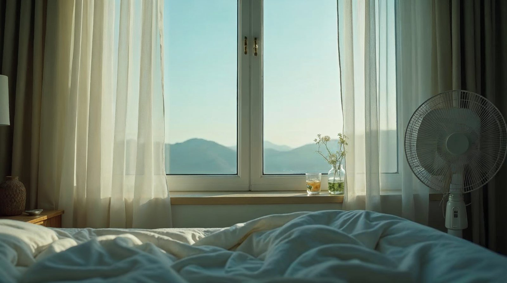
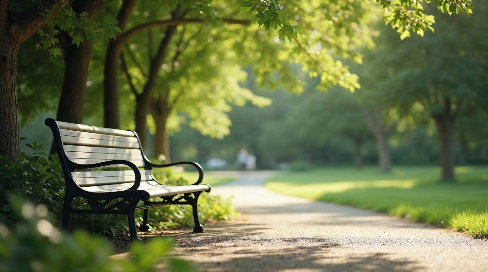
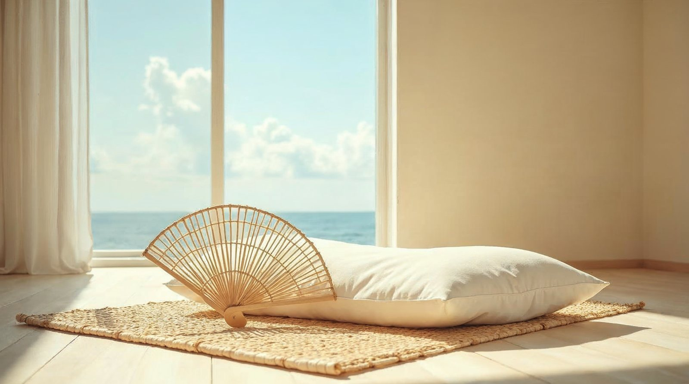
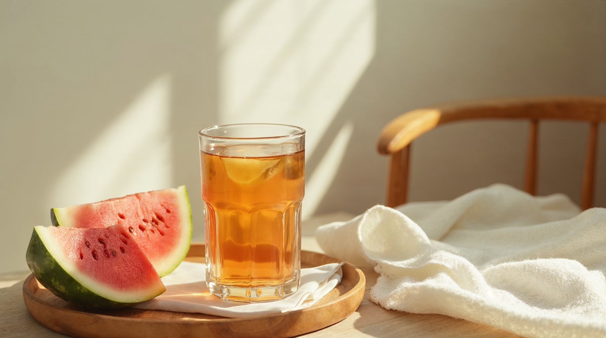
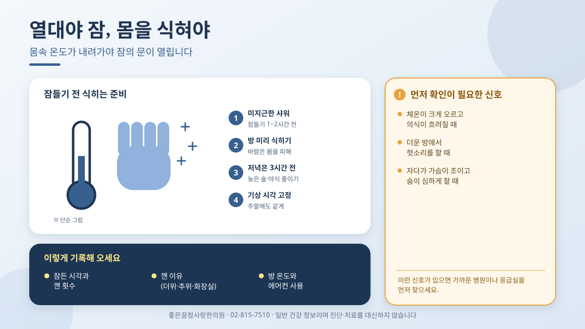

이종호 한의사 감수좋은꿈참사랑한의원 대표원장 (한의사 면허번호 19769)발행 2026-11-26 · 수정 2026-11-27
이 글의 차례
자정이 넘었는데 방 안 공기가 여전히 후끈해요. 이불을 걷어차고 베개를 뒤집어도 등과 목덜미가 축축하고, 선풍기 바람은 미지근하기만 하죠. 휴대폰 시계를 몇 번이나 보다가 창밖이 희미하게 밝아 올 무렵에야 겨우 잠이 듭니다.
한여름이면 진료실에서 이런 얘기를 자주 들어요. "여름만 되면 잠을 못 자요." "에어컨을 켜면 춥고, 끄면 더워서 깨요." 낮에는 멍하고 오후엔 졸음이 쏟아지고, 작은 일에도 쉽게 짜증이 난다고들 하세요.
밤 최저 기온이 25도 아래로 내려가지 않는 밤을 열대야라고 불러요. 이런 밤엔 누구라도 잠이 얕아지기 쉬워요. 원래 그래요. 왜인 줄 아세요? 잠들 때는 몸 안쪽 온도가 살짝 내려가야 하는데, 방이 더우면 그 열이 빠져나갈 데가 없거든요.
그러니까 사실은 '더워서 잠을 설치는 밤'과 '여름이 지나도 잠이 돌아오지 않는 것'은 다른 얘기예요. 앞의 것은 잠자리 환경을 다듬어 보면 되고, 해마다 여름 불면이 더 길어진다면 잠의 바탕을 함께 살펴볼 필요가 있어요.
오늘은 열대야에 잠이 왜 달아나는지, 그리고 그 밤을 조금 덜 힘들게 보내는 방법을 정리해 볼게요.

열대야 불면은 어떤 모습인가요?
가장 흔한 것은 잠들기까지 오래 걸리는 것입니다. 몸은 피곤한데 누우면 열이 오르는 느낌에 이리저리 뒤척이게 됩니다. 겨우 잠이 들어도 땀에 젖어 깨고, 다시 잠들기까지 또 한참이 걸립니다.
에어컨을 켜고 자는 분은 반대로 새벽에 추워서 깨기도 합니다. 목이 칼칼하고 코가 막히며, 아침에 몸이 뻐근하게 굳어 있습니다. 덥다가 춥다가를 오가며 밤새 잠이 토막 나는 셈입니다.
이런 밤이 며칠만 이어져도 낮 생활이 흔들립니다. 오전에는 머리가 멍하고, 점심 뒤에는 졸음이 쏟아지며, 집중이 잘되지 않습니다. 잠을 보충하려고 낮잠을 길게 자면 그날 밤은 또 잠이 늦어지는 흐름이 생깁니다.
왜 더운 밤에는 잠들기 어려울까요
사람은 잠들 무렵 몸 깊은 곳의 온도, 즉 심부 체온이 조금 떨어지면서 졸음이 옵니다. 손과 발의 혈관이 넓어지며 몸속 열을 바깥으로 내보내고, 그 덕분에 깊은 잠으로 들어갈 수 있습니다. 잠들기 전에 손발이 따뜻해지는 느낌이 드는 것도 이 과정의 일부입니다.
그런데 방 안 공기가 덥고 습하면 몸의 열이 바깥으로 잘 빠져나가지 못합니다. 땀을 흘려도 습도가 높으면 땀이 잘 마르지 않아 열을 식히는 효과가 떨어집니다. 몸이 식지 않으니 잠으로 들어가는 문이 쉽게 열리지 않습니다.
더위는 몸을 긴장 상태로 만들기도 합니다. 더운 환경에서는 심장이 조금 더 빨리 뛰고, 몸은 쉬기보다 깨어 있는 쪽으로 기울기 쉽습니다. 그래서 깊은 잠의 비율이 줄고 얕은 잠이 늘며, 작은 소리나 움직임에도 쉽게 깹니다.
창문을 열어 두는 여름밤에는 바깥 소음과 이른 새벽빛까지 더해져 잠이 더 쉽게 흔들립니다. 암막 커튼이나 귀마개가 도움이 되는 분도 계십니다.
여름에는 해가 길어 저녁 늦게까지 밝고, 밤늦게까지 활동하거나 시원한 맥주를 찾는 일도 늘어납니다. 늦은 빛과 술, 늦은 식사는 모두 잠드는 시각을 뒤로 미루는 요인이 됩니다.
한의학에서는 더운 밤에 열이 위로 오르고 마음이 들떠 잠들지 못하는 모습을 여름철 열이 마음을 어지럽히는 상태로 설명해 왔습니다. 진찰에서 쓰는 전통적인 표현이고 따로 진단명은 아니지만, 몸의 열을 식히고 마음을 가라앉히는 일이 여름 잠의 중심이라는 점을 잘 보여 줍니다.
여름에만 그런 걸까요, 원래 잠이 약했던 걸까요?
열대야 불면은 대개 날씨가 선선해지면 함께 가라앉습니다. 그런데 가을이 와도 잠들기 어렵거나 새벽에 자꾸 깬다면, 여름은 계기였을 뿐 잠의 문제가 따로 있을 수 있습니다.
생각이 많아 잠들지 못하는 분, 걱정과 긴장이 쌓여 있는 분은 여름 더위가 더해지며 불면이 도드라지는 경우가 있습니다. 갱년기 무렵 열이 오르고 땀이 나는 분, 밤에 소변 때문에 여러 번 깨는 분, 코골이가 심하고 자다가 숨이 막히는 느낌이 드는 분도 여름에 잠이 더 흔들립니다.
그래서 진료실에서는 여름 전에는 잠이 어땠는지 꼭 여쭙니다. 지난겨울과 봄의 잠을 떠올려 보시면, 지금의 불면이 여름 때문인지 그 전부터 이어진 것인지 가늠하는 데 도움이 됩니다. 여름 전에도 잠이 얕았다면 더위 대책과 함께 잠 자체를 살피는 일이 필요하고, 여름에만 그렇다면 잠자리 환경을 맞추는 것이 먼저입니다.
에어컨, 어떻게 켜고 자면 좋을까요?
에어컨을 아예 끄고 버티면 더위로 잠이 깨고, 밤새 세게 켜 두면 새벽에 추워서 깨거나 아침에 몸이 굳습니다. 그래서 저는 에어컨을 '잠드는 문을 열어 주는 도구'로 쓰시라고 말씀드립니다.
잠들기 30분에서 한 시간 전에 방을 미리 식혀 두고, 잠자리에 들 때는 온도를 조금 올리거나 예약 끄기를 맞춰 두는 방법이 있습니다. 실내 온도는 26도 안팎, 습도는 50~60% 정도를 기준으로 몸에 맞게 조절해 보세요.
바람이 몸에 직접 닿지 않도록 송풍 방향을 천장이나 벽 쪽으로 돌리는 것이 중요합니다. 선풍기를 함께 쓴다면 몸을 향해 고정하기보다 회전으로 두고, 방 안 공기를 순환시키는 용도로 쓰시는 것이 좋습니다. 배와 발은 얇은 이불로 덮어 새벽의 냉기를 막아 주세요.
먼저 이렇게 여쭙니다
처음 오시면 대략 이런 순서로 여쭙니다. 미리 떠올려 오시면 이야기가 수월해집니다.
- 잠자리에 드는 시각과 실제로 잠드는 시각은 언제인가요?
- 밤에 몇 번 깨고, 깨는 이유는 무엇인가요?(더위, 추위, 화장실, 생각)
- 방 온도와 에어컨, 선풍기는 어떻게 쓰시나요?
- 여름 전에는 잠이 어땠나요?
- 코골이가 심하거나 자다가 숨이 막히는 느낌이 있나요?
- 저녁 식사 시각, 술, 커피는 어떻게 하시나요?
- 낮잠은 언제, 얼마나 주무시나요?
정확한 숫자를 몰라도 괜찮습니다. '두 시쯤 땀에 젖어 깨서 네 시에 다시 잔다'처럼 흐름만 말씀해 주셔도 충분합니다.
일상에서 먼저 해 볼 수 있는 것
여름 잠은 몸을 식히는 준비와 잠의 리듬을 지키는 것이 기본입니다.
- 잠들기 1~2시간 전 미지근한 물로 샤워하기(찬물보다 미지근한 물)
- 잠들기 전 방을 미리 식혀 두고, 바람은 몸에 직접 닿지 않게 하기
- 통풍이 잘되는 면이나 마 소재 잠옷과 얇은 이불 쓰기
- 저녁 식사는 잠들기 3시간 전에 마치고, 늦은 야식과 술 줄이기
- 오후 늦게는 커피와 에너지 음료 피하기
- 일어나는 시각은 주말에도 일정하게 지키기
샤워는 찬물보다 미지근한 물이 좋습니다. 찬물로 씻으면 순간은 시원하지만 피부 혈관이 오므라들어 몸속 열이 오히려 갇히기 쉽습니다. 미지근한 물로 씻으면 혈관이 넓어진 채로 열이 서서히 빠져나가 잠들기가 수월해집니다.
베개는 머리 쪽 열이 빠지도록 통기가 잘되는 것을 쓰고, 목덜미와 발에 땀이 많이 차면 얇은 수건을 깔아 두는 것도 방법입니다. 시원한 물에 적셔 꼭 짠 수건을 잠깐 목덜미에 대어 주는 것도 도움이 될 수 있습니다.
잠이 오지 않을 때 누워서 휴대폰을 보는 습관은 잠을 더 멀어지게 합니다. 화면의 밝은 빛은 몸에 아직 낮이라는 신호를 보내고, 짧은 영상과 글은 머리를 다시 깨웁니다. 20분 넘게 잠이 오지 않으면 잠자리에서 일어나 어두운 거실에서 조용히 앉아 있다가, 졸음이 오면 다시 눕는 방법을 권합니다.

낮 시간을 어떻게 보내느냐도 중요합니다
밤잠은 낮의 생활과 이어져 있습니다. 아침에 일어나면 커튼을 열고 햇빛을 받으며, 정해진 시각에 아침을 드시면 몸의 시계가 하루를 시작합니다. 이렇게 아침을 일정하게 열어 두면 밤에 졸음이 오는 시각도 조금씩 앞당겨집니다. 반대로 저녁에는 조명을 조금 어둡고 따뜻한 색으로 바꿔 몸이 밤을 준비하게 해 주세요.
낮잠은 오후 3시 이전에 20~30분 안쪽으로 짧게 주무시는 것이 좋습니다. 밤잠을 보충하겠다고 오후 늦게 한두 시간 자면, 그날 밤은 또 잠들기 어려워집니다.
운동은 아침이나 이른 저녁의 선선한 시간에 하시길 권합니다. 땀을 적당히 흘리면 밤잠이 깊어지는 데 도움이 되지만, 한낮의 뙤약볕 아래 운동은 오히려 몸을 지치게 하니 피해 주세요. 또 잠들기 직전의 격한 운동은 몸을 깨우고 체온을 올려 오히려 잠을 방해할 수 있습니다.

어르신과 아이의 여름밤
어르신은 더위를 늦게 느끼시고, 전기료 걱정에 에어컨을 켜지 않고 지내시는 경우가 많습니다. 땀을 내는 힘도 약해 몸의 열이 잘 빠지지 않으니, 밤새 더운 방에서 뒤척이다 아침에 기운 없이 일어나시기도 합니다. 가족이 방 온도를 함께 확인해 드리고, 잠들기 전 물 한 컵을 챙겨 드리면 좋습니다.
밤에 소변 때문에 자주 깨시는 어르신은 저녁 늦게 물을 많이 드시지 않도록 낮 동안 나눠 드시게 하는 것이 도움이 됩니다. 어두운 밤에 화장실을 오가다 넘어지지 않도록 복도에 작은 불을 켜 두시는 것도 잊지 마세요.
아이는 어른보다 열이 많고 땀을 많이 흘립니다. 잠든 뒤 한두 시간 사이에 땀을 가장 많이 흘리니, 이 무렵 등과 목을 한 번 닦아 주고 젖은 옷을 갈아입혀 주면 깨는 횟수가 줄어들 수 있습니다. 아이가 잠든 방은 바람이 몸에 직접 닿지 않도록 특히 신경 써 주세요.

열대야 다음 날을 보내는 방법
잠을 설친 다음 날은 몸도 마음도 무겁습니다. 이런 날일수록 아침에 정해진 시각에 일어나 햇빛을 받고, 아침 식사를 챙기는 것이 다음 날 밤잠을 지키는 길입니다. 늦잠으로 부족한 잠을 채우면 리듬이 더 밀리기 쉽습니다.
커피로 버티고 싶은 날이지만, 오후 늦게 마시는 커피는 그날 밤을 또 힘들게 만듭니다. 커피는 오전에 한두 잔으로 정해 두고, 오후에는 미지근한 물이나 보리차로 바꿔 보세요. 졸음 운전이 걱정될 만큼 피곤한 날은 운전을 줄이시는 것이 좋습니다.
한의원에서 함께 살필 수 있는 경우
- 여름마다 잠들기 어렵고 밤에 자주 깨는 날이 이어지는 경우
- 밤에 몸에 열이 오르고 땀을 많이 흘려 잠이 토막 나는 경우
- 더위에 잠을 설친 뒤 낮에 멍하고 쉽게 지치는 경우
- 여름이 지나도 잠이 돌아오지 않는 경우
- 갱년기 열감과 땀이 여름 더위와 겹쳐 잠이 더 얕아진 경우
좋은꿈참사랑한의원에 오시면 모든 분의 맥을 먼저 짚고, 아래 '먼저 확인이 필요한' 신호가 없는지도 함께 봅니다. 그다음 몸의 열감과 땀, 소화와 대소변, 마음의 긴장을 함께 여쭙습니다.
진찰 내용을 바탕으로 잠자리 환경과 생활에서 바꿔 볼 것 하나와 함께 침, 한약 상담 가운데 지금 상태에 맞는 것을 정합니다. 한약을 상의할 때는 드시는 약을 모두 확인하고 신중하게 정하며, 임신 중이시거나 가능성이 있다면 먼저 알려 주세요. 산부인과 선생님과 상의하는 것이 우선입니다.
수면제나 다른 약을 드시고 계시다면 그 약은 상의 없이 멈추지 않습니다. 코골이와 숨 막힘이 심하다면 수면 검사를 받아 볼 수 있는 병원 진료를 함께 권해 드립니다.
이렇게 기록해 오시면 상담이 쉬워집니다
2주 정도만 간단히 적어 보시면 잠이 흔들리는 이유가 보이기 시작합니다.
- 잠자리에 든 시각과 실제로 잠든 시각, 일어난 시각
- 밤에 깬 횟수와 깬 이유(더위, 추위, 화장실, 생각)
- 방 온도와 에어컨·선풍기 사용 방법
- 저녁 식사 시각, 술과 커피를 마신 날
- 낮잠 시각과 길이
- 낮의 컨디션(0~10)
기록을 보시면 에어컨을 미리 켜 둔 날, 샤워를 한 날, 술을 마시지 않은 날 잠이 조금 더 편했다는 식의 나만의 흐름이 보이기도 합니다.
여름밤을 조금 덜 힘들게
열대야 불면은 몸이 더위 속에서 열을 식히려고 애쓰는 과정에서 생겨요. 그러니 잠을 억지로 붙잡으려 애쓰기보다, 몸이 식을 수 있는 환경을 먼저 만들어 주는 게 순서예요.
몸을 살피는 건 제가 맡을게요. 대신 하나만 부탁드려요. 잠든 시각은 들쭉날쭉해도 괜찮으니, 아침에 일어나는 시각만 매일 같게 붙들어 주세요. 딴 건 하시던 대로 편하게 하셔도 돼요.
못 잔 밤 다음 날 늦잠으로 메우고 싶은 마음, 충분히 알아요. 그런데 일어나는 시각이 흔들리면 그날 밤 잠도 같이 밀리기 쉬워요. 하루 못 지켰다고 자책하지 마시고, 이튿날 다시 붙들면 되는 거예요.
다음에 오시면 2주 동안의 잠 기록을 함께 펼쳐 보면서 어떤 밤이 편했는지 같이 살펴볼게요. 궁금한 건 그때 편하게 물어보세요.
이런 증상은 먼저 확인이 필요합니다
- 더운 방에서 지내던 중 체온이 크게 오르고 의식이 흐려지거나 헛소리를 하는 경우
- 자다가 갑자기 가슴이 조이듯 아프거나 숨이 심하게 차서 깨는 경우
이런 신호가 있으면 한의원보다 가까운 병원이나 응급실을 먼저 찾으세요.
함께 읽으면 좋은 글
- 잠들기까지 한 시간 넘게 걸릴 때 한의원에서는 무엇을 먼저 묻나요?
- 자기 전 침대에서 스마트폰을 보다 잠이 자꾸 늦어질 때, 불면은 어떻게 바꿔 가나요?
- 자고 일어나면 베개와 잠옷이 젖어 있는 밤 식은땀(도한)은 어떻게 살피나요?
- 갱년기에 밤마다 땀에 젖어 깨는 날이 많을 때는 어떻게 하나요?
- 밤에 충분히 자도 낮에 졸음이 쏟아지는 과다수면·기면증 의심은 어떻게 살피나요?

여쭙는 것
- 잠자리에 드는 시각과 실제로 잠드는 시각은 언제인가요?
- 밤에 몇 번 깨고, 깨는 이유는 무엇인가요?(더위, 추위, 화장실, 생각)
- 방 온도와 에어컨, 선풍기는 어떻게 쓰시나요?
생활에서 해 볼 것
- 잠들기 1~2시간 전 미지근한 물로 샤워하기(찬물보다 미지근한 물)
- 잠들기 전 방을 미리 식혀 두고, 바람은 몸에 직접 닿지 않게 하기
- 통풍이 잘되는 면이나 마 소재 잠옷과 얇은 이불 쓰기
한의원에서 함께 살필 것
- 여름마다 잠들기 어렵고 밤에 자주 깨는 날이 이어지는 경우
- 밤에 몸에 열이 오르고 땀을 많이 흘려 잠이 토막 나는 경우
- 더위에 잠을 설친 뒤 낮에 멍하고 쉽게 지치는 경우
먼저 확인이 필요한 신호
- 더운 방에서 지내던 중 체온이 크게 오르고 의식이 흐려지거나 헛소리를 하는 경우
- 자다가 갑자기 가슴이 조이듯 아프거나 숨이 심하게 차서 깨는 경우
한눈에 보는 표
| 구분 | 핵심 |
|---|---|
| 여쭙는 것 | 잠자리에 드는 시각과 실제로 잠드는 시각은 언제인가요? 밤에 몇 번 깨고, 깨는 이유는 무엇인가요?(더위, 추위, 화장실, 생각) |
| 생활에서 해 볼 것 | 잠들기 1~2시간 전 미지근한 물로 샤워하기(찬물보다 미지근한 물) 잠들기 전 방을 미리 식혀 두고, 바람은 몸에 직접 닿지 않게 하기 |
| 한의원에서 함께 살필 것 | 여름마다 잠들기 어렵고 밤에 자주 깨는 날이 이어지는 경우 밤에 몸에 열이 오르고 땀을 많이 흘려 잠이 토막 나는 경우 |
| 먼저 확인이 필요한 신호 | 더운 방에서 지내던 중 체온이 크게 오르고 의식이 흐려지거나 헛소리를 하는 경우 자다가 갑자기 가슴이 조이듯 아프거나 숨이 심하게 차서 깨는 경우 |
자주 묻는 질문
열대야에 에어컨을 밤새 켜 두면 안 되나요?
켜 두셔도 되지만 온도를 너무 낮추지 말고, 바람이 몸에 직접 닿지 않게 하시길 권합니다. 새벽에 추워서 깬다면 예약 끄기나 온도를 조금 올리는 방법을 함께 써 보세요.
잠이 안 올 때 찬물 샤워가 도움이 되나요?
찬물은 순간 시원하지만 몸속 열이 갇히기 쉬워서, 잠들기 1~2시간 전 미지근한 물로 씻는 쪽을 권합니다.
더위에 잠을 못 자서 낮잠을 길게 자도 될까요?
낮잠은 오후 3시 이전에 20~30분 안쪽으로 짧게 주무시는 것이 좋습니다. 길게 자면 그날 밤 잠이 더 늦어지기 쉽습니다.
여름 불면에 수면제를 먹어도 되나요?
수면제는 처방한 선생님과 상의해서 정하실 부분입니다. 이미 드시고 계신다면 상의 없이 멈추지 마시고, 한의원에서는 잠자리 환경과 생활 리듬을 함께 살핍니다.
아이가 더위에 자꾸 깨는데 어떻게 해 주면 좋을까요?
방을 미리 식혀 두고 땀이 많이 나는 등과 목에 얇은 수건을 깔아 주세요. 배는 얇은 이불로 덮어 주고, 잠드는 시각을 일정하게 지켜 주시면 도움이 됩니다.
좋은꿈참사랑한의원은 재진 때 지난번 이야기부터 이어서 여쭙니다. 진료시간과 예약은 오시는 길에서 확인하세요.
어디서 상담받을 수 있나요?
좋은꿈참사랑한의원은 서울 동작구 만양로2길 2 신성빌딩 3층·5층(서울 동작구 상도동, 7호선 상도역 3번 출구 근처)에 있습니다. 한의사 3명(이종호 대표원장, 조영기 수석진료원장, 정원영 진료원장)이 진료합니다. 진료시간은 평일 09:30~20:00(점심 13:00~14:00), 토·일·공휴일 09:30~15:00이며, 방문 전 전화로 확인을 권합니다. 예약은 네이버 예약, 카카오톡 상담, 전화 02-815-7510로 받습니다.
이 글은 일반적인 건강 정보이며 개인의 진단이나 치료를 대신하지 않습니다. 증상이 있거나 복용 중인 약이 있다면 진료를 통해 확인하세요. 치료 효과는 개인마다 다를 수 있습니다.
작성 기준: 일반적으로 알려져 있는 건강 정보를 참고해 정리했습니다(대표원장 감수). 증상 기록은 1~2주 동안 하루 1회, 비슷한 시간에 적어 오시면 지난 상태와 비교하기 쉽습니다.